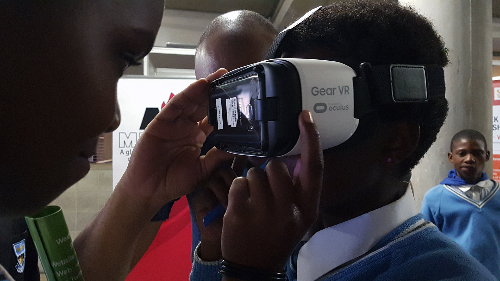
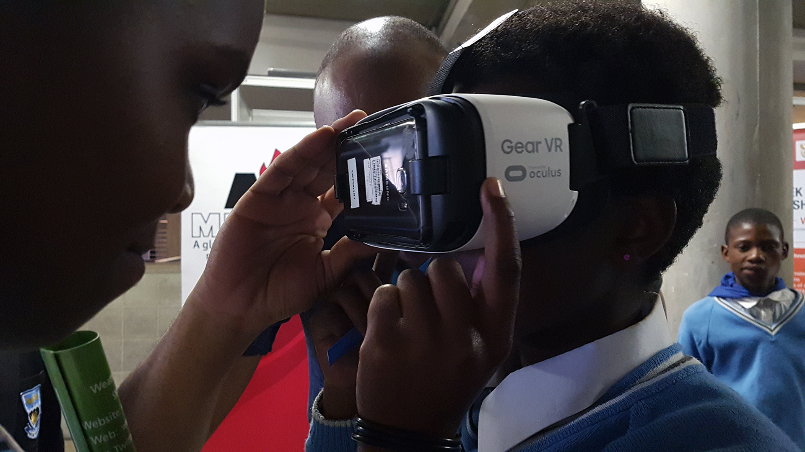

Global Challenge: Educational Inequality for Children with Disabilities
According to UNESCO, children with disabilities are among the most marginalized groups in education. Worldwide, over 240 million children with disabilities face significant barriers to accessing quality education. Traditional educational systems often lack the resources, infrastructure, trained personnel, and adaptive technologies needed to accommodate diverse learning needs.
This creates a cycle of exclusion that limits opportunities, perpetuates inequality, and prevents these children from reaching their full potential. The gap between inclusive education policies and actual implementation remains vast, particularly in developing regions.
Global Opportunity: Technology-Enabled Inclusive Education
The rapid advancement of assistive technologies, artificial intelligence, adaptive learning platforms, and digital accessibility tools presents an unprecedented opportunity to revolutionize inclusive education. Modern technology can:
- Provide personalized learning experiences tailored to individual abilities
- Enable real-time communication through speech-to-text and text-to-speech
- Offer alternative input methods for students with mobility challenges
- Create immersive learning environments through VR and AR
- Connect students globally, breaking down geographic barriers
 
